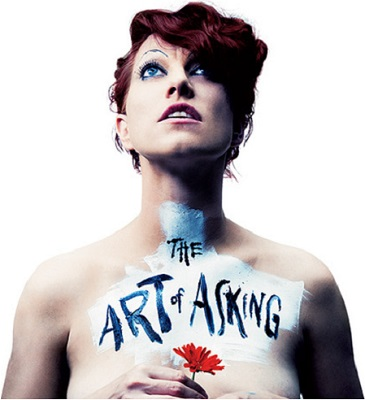

ABOUT
Amanda MacKinnon Gaiman Palmer (born April 30, 1976) is an American singer, songwriter, musician, and performance artist who is the lead vocalist, pianist, and lyricist of the duo The Dresden Dolls. She performs as a solo artist, and was also one-half of the duo Evelyn Evelyn, and the lead singer and songwriter of Amanda Palmer and the Grand Theft Orchestra.
Palmer was born Amanda MacKinnon Palmer in New York City's Mount Sinai Hospital, and grew up in Lexington, Massachusetts.Her parents divorced when she was one year old, and as a child she rarely saw her father.
She attended Lexington High School, where she was involved in the drama department, and attended Wesleyan University where she was a member of the Eclectic Society. She staged performances based on work by the Legendary Pink Dots, an early influence, and was involved in the Legendary Pink Dots electronic mailing list, Cloud Zero. She then formed the Shadowbox Collective, devoted to street theatre and putting on theatrical shows (such as the 2002 play, Hotel Blanc, which she directed). Another early influence is Judy Blume, children's author.
With an interest in the performing arts, both in music and in theatre, Palmer spent time busking as a living statue called "The Eight Foot Bride" in Harvard Square, Cambridge, Massachusetts; Edinburgh, Scotland; Australia (where she met Jason Webley); and many other locations. She refers to this line of work on The Dresden Dolls' self-titled CD, with the song "The Perfect Fit":
I can paint my face
And stand very, very still
It's not very practical
But it still pays the bills
as well as on the A is for Accident track "Glass Slipper":
I give out flowers
To curious strangers
who throw dollars at my feet.